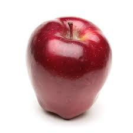

| Name | Description | Image |
|---|---|---|
| Honeycrisp | Honeycrisp is an apple cultivar developed at the Minnesota Agricultural Experiment Station's Horticultural Research Center at the University of Minnesota, Twin Cities. Also the best kind of apple in my opinion. | |
| Gala | Gala is a clonally propagated apple cultivar with a mild and sweet flavour. In 2018, it surpassed Red Delicious as the apple cultivar with the highest production in the United States, according to the US Apple Association. It was the first time in over 50 years that any cultivar was produced more than Red Delicious. | |
| Granny Smith | The Granny Smith is a tip-bearing apple cultivar which originated in Australia in 1868. It is named after Maria Ann Smith, who propagated the cultivar from a chance seedling. The tree is thought to be a hybrid of Malus sylvestris, the European wild apple, with the domesticated apple Malus domestica as the polleniser. | |
| Red Delicious | The 'Red Delicious' is a clone of apple cultigen, now comprising more than 50 cultivars, first recognized in Madison County, Iowa, in 1872. It is one of the fifteen most popular apple cultivars in the United States. From 1968 to 2018, it was the most produced cultivar in the U.S. Also the worst kind of apple in my opinion. |  |
Please enter your name and phone number then submit.